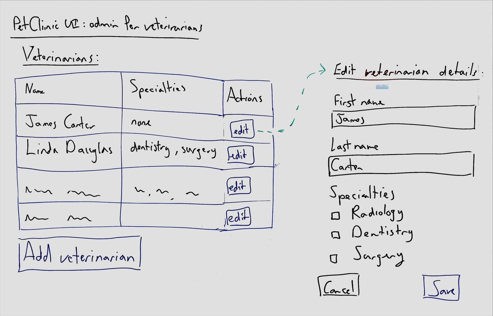

Whiteboarding UI
Use free-form whiteboarding to sketch the initial user interface.
It is not important to have detailed button states, complete labels, or colors. Instead, focus on the overall layout and the flow of the user interface.

By drawing UI and describing how it should work, you clarify the choices made in the other Caseum views. This is especially helpful for non-technical stakeholders. When you talk through the UI sketches, you will often find new requirements that require changes to the user stories, domain events, or models.
There is a lot of good advice on UI and UX design that is also useful when sketching UI on the whiteboard. Caseum does not replicate that advice. Many architects are not good UI designers, and few UI designers are also architects. Recognize the differences in skill and plan for it. When possible, involve a skilled UI/UX designer early on in designing software.